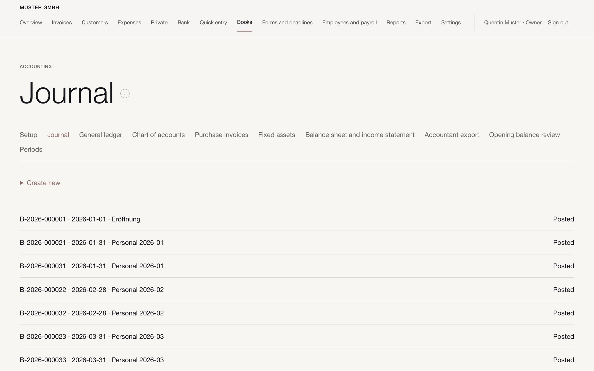

01
Bookkeeping
- Cash-basis accounting (Einnahmen-Ausgaben-Rechnung) for sole proprietors, including the small-business exemption
- Double-entry bookkeeping for the GmbH, with chart of accounts, journal, general ledger, balance sheet and profit and loss
- Invoices, payments, expenses and payroll post themselves; corrections are made by reversal, nothing is overwritten
- Purchase invoices, fixed asset register with depreciation, month-end and year-end closing
- Prepare the annual accounts of a small GmbH as a package for the Firmenbuch
- Switching from another program: carry over opening balances and open invoices, and reconcile them
